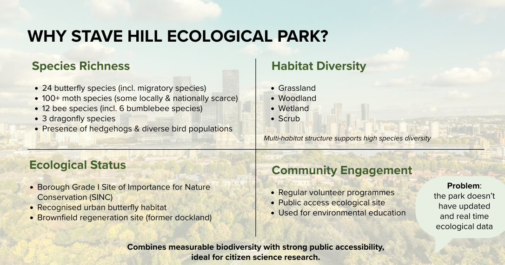
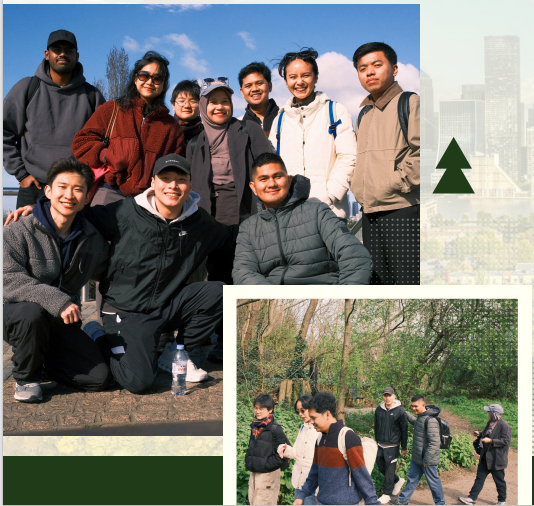
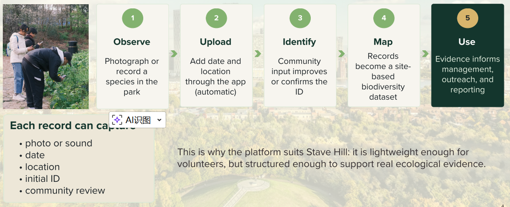
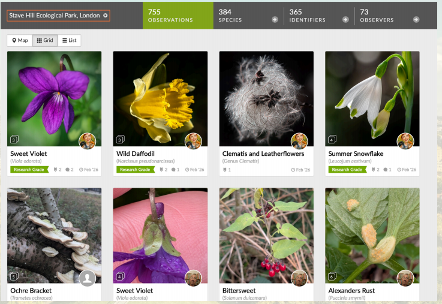
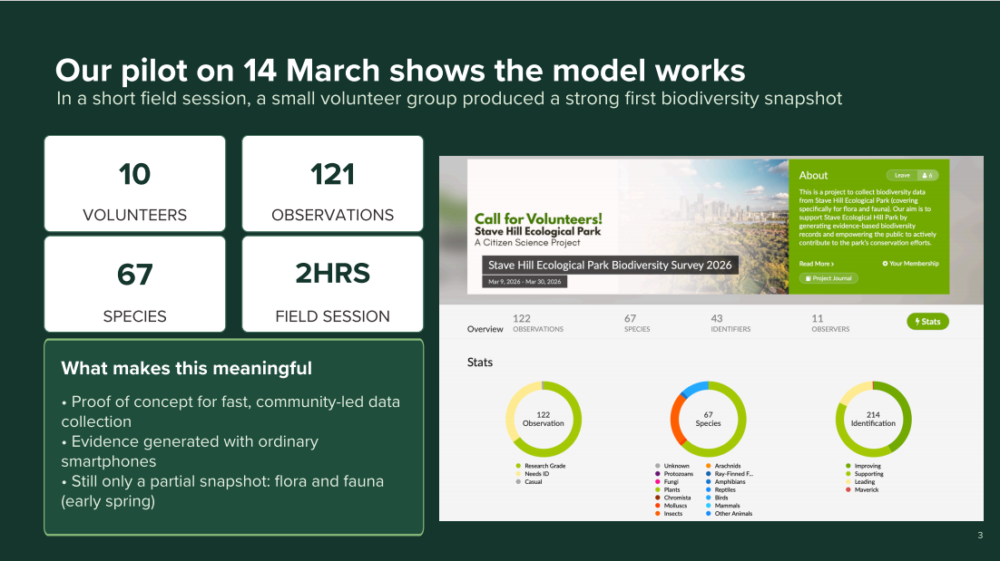
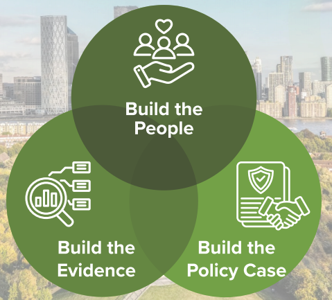
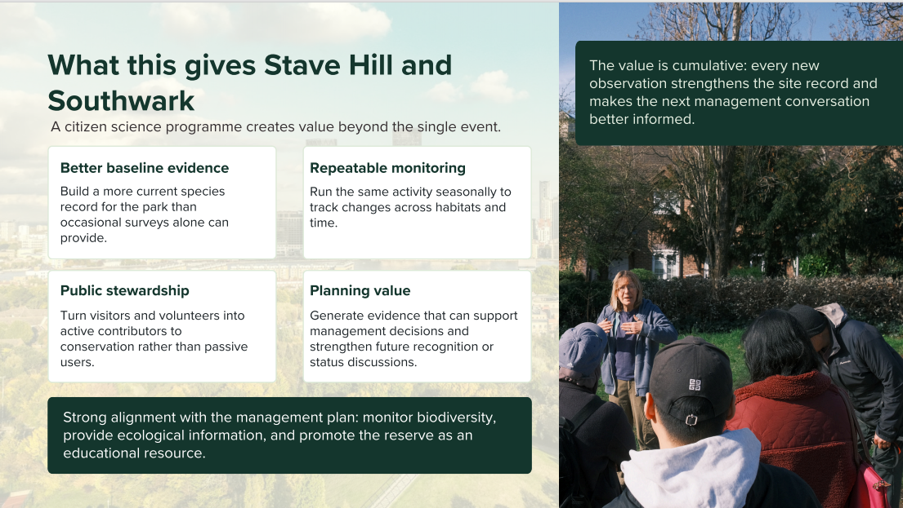

Protecting, enhancing, and promoting Russia Dock Woodlands for the enjoyment of all
This page introduces a citizen science approach for Stave Hill Ecological Park, showing how public participation and iNaturalist can help build stronger biodiversity evidence for conservation, education, and local decision-making.
Stave Hill Ecological Park has rich biodiversity, diverse habitats, strong public access, and an established conservation role. However, the project identified a key gap: the park does not yet have sufficiently updated and real-time ecological data. Citizen science offers a practical way to address that gap by turning public observations into usable biodiversity evidence.
The site supports butterflies, moths, bees, dragonflies, birds, and hedgehogs, showing strong biodiversity value in an urban context.
Grassland, woodland, wetland, and scrub create a multi-habitat structure that supports a wide variety of species.
Because the site is publicly accessible and already linked to volunteer activity, it is especially suitable for citizen science participation.
Better biodiversity evidence can support protection, funding, ecological management, and future status discussions.

The project positions Stave Hill as an ideal site for citizen science because it combines measurable biodiversity with strong public accessibility.
Citizen science is research carried out with public participation. People who are not professional scientists help to observe, record, classify, or analyse data in ways that contribute to scientific knowledge and local decision-making.
The project treats local people, students, visitors, and volunteers not as passive park users, but as active contributors to biodiversity monitoring.
The aim is not only to involve people, but to generate structured ecological evidence that can support conservation and planning.

Public participation becomes scientifically useful when observations are recorded, shared, and organised in a consistent way.
iNaturalist is presented as a lightweight but structured platform that can turn an ordinary park walk into a mappable biodiversity record. Each observation can include a photo or sound, date, location, an initial identification, and community review.
Photograph or record a species in the park.
Add the record with automatic date and location through the app.
Community input improves or confirms the species identification.
Records become a site-based biodiversity dataset.
Evidence can then support management, outreach, and reporting.
Key point: iNaturalist is simple enough for volunteers to use, but structured enough to produce evidence that matters.

The platform connects public participation with a usable ecological data workflow.
The PDF presents a short field pilot on 14 March 2026 to test whether this model works in practice. The results suggest that even a small volunteer group can quickly generate meaningful biodiversity evidence.
A small group was enough to produce a strong first biodiversity snapshot.
Participants recorded a substantial number of observations in a short session.
The pilot captured a wide range of flora and fauna, even in early spring.
The session shows that useful evidence can be generated quickly and practically.
The pilot demonstrated that community-led biodiversity data collection can work using ordinary smartphones, while still producing records with scientific and management value.
The project reports that the field activity added 23 new species records, showing that citizen science can expand the site’s evidence base rather than merely repeat existing information.

The site already had a foundation of observations, but the project argues that organised participation can accelerate and strengthen the record.

The session shows that a short, structured event can generate a meaningful biodiversity snapshot.
The project organises its recommendations into three connected strands: build the people, build the evidence, and build the policy case.
Develop seasonal bioblitz programmes, partner with universities, and involve schools so that volunteer capacity and long-term stewardship continue to grow.
Strengthen the iNaturalist project database and link it more directly to Southwark’s monitoring systems so the park becomes a better evidenced reference site.
Submit data to Southwark Council’s ecology team, use accumulated records to support future status discussions, and publish the method as a replicable model for other London boroughs.

The recommendations show that citizen science must be social, evidential, and policy-facing at the same time.

Better baseline evidence, repeatable monitoring, public stewardship, and stronger support for management decisions all grow cumulatively over time.
Key takeaway: the value of this approach is cumulative. Every new public observation strengthens the biodiversity record, supports better-informed management conversations, and helps turn local participation into long-term conservation evidence.